Circuit resolution¶
In this unit we are going to study how to solve circuits with resistors to find the currents and voltages that flow through them.
Index of contents:
Laws and formulas used¶
The equations that we are going to use to solve the circuits are Ohm's law and the laws of parallel and series circuits.
We can also use the formulas, which we have already studied, for the equivalent resistances of a series circuit and a parallel circuit.
- Formulas for Ohm`s law
- Series circuit laws
- The current flowing through several resistors in series is the same for all of them.
- The total voltage of a series circuit is equal to the sum of the voltages of each of its resistances.
- Parallel circuit laws
- The total current flowing through several resistors in parallel is equal to the sum of the currents flowing through the resistors.
- The voltage of each of the resistors that are in parallel is the same for all of them.
- Equivalent resistance of a series circuit
- Equivalent resistance of a parallel circuit
Each of the circuits that we are going to analyze will have a grid associated with the voltage, current intensity, and resistance of each component. That grid will have to be filled in with the solutions that we are obtaining by applying the previous formulas, until the entire grid is complete and we know all the values of the circuit.
Voltage divider with two resistors¶
This circuit is widely used in electronics to achieve lower voltages than the supply voltage. It consists of two resistors connected in series to each other and to the two power supply terminals.
If we have a circuit with a supply voltage of 5 volts and we need a voltage of 3 volts, the voltage divider is the easiest way to achieve it.
In the following image we can see the voltage divider circuit.
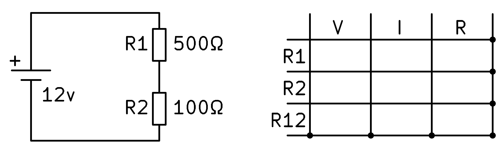{kind=link}
To solve the circuit we begin by writing in the table the values of the resistors that we know, R1 and R2.

Next we write in the table the voltage values that we know, which in this case will be the total voltage of the two resistors R1 and R2 in series, which coincides with the battery voltage.
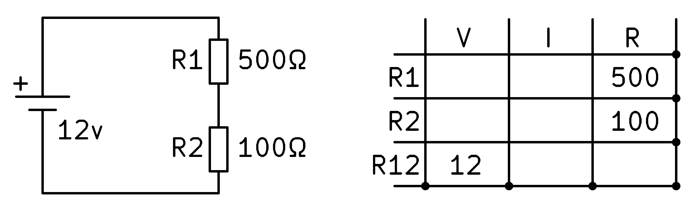{kind=link}
Now we must find out if any grid can be solved with the formulas we know. The total resistance R12 can be calculated with the series resistance formula, that is, by adding the two resistances.
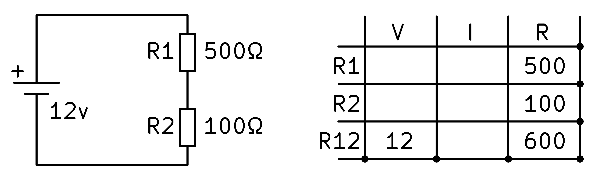{kind=link}
To continue, in the last row we have the voltage and the resistance so we can find the current with Ohm's law. Dividing the voltage by the resistance we get 20 milliamps of current.

Now we can apply the law of series circuits which says that the current will be the same through all the components of the circuit.

Finally, with Ohm's law we can find the voltages in each of the resistors by multiplying the current by the resistance.
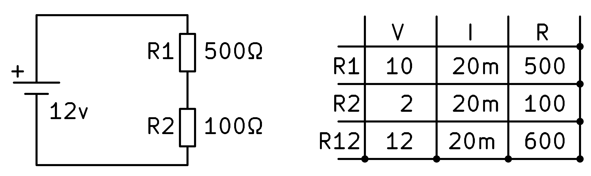{kind=link}
And the circuit is completely solved.
The voltage across resistor R2 will be equal to 2 volts, a voltage less than the supply voltage because this circuit has divided the supply voltage by 6.
Voltage divider with two unknown resistors¶
In this section we are going to solve a series circuit in which we do not know the value of the resistors, we only know the current that circulates through the circuit (10mA) and the voltage that we want to obtain in R2 (9V).
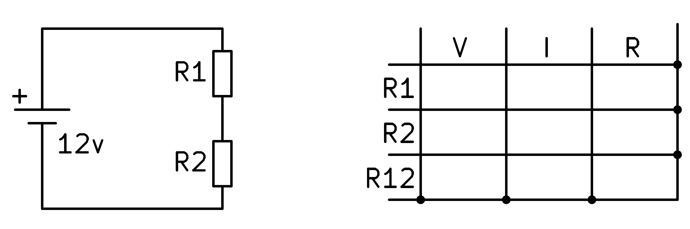{kind=link}
We start by filling in the table with the values we know of the circuit.
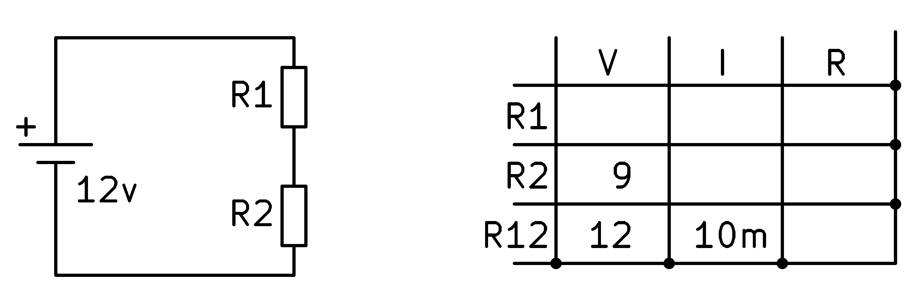{kind=link}
Next we can calculate the total resistance R12 by applying Ohm's law.
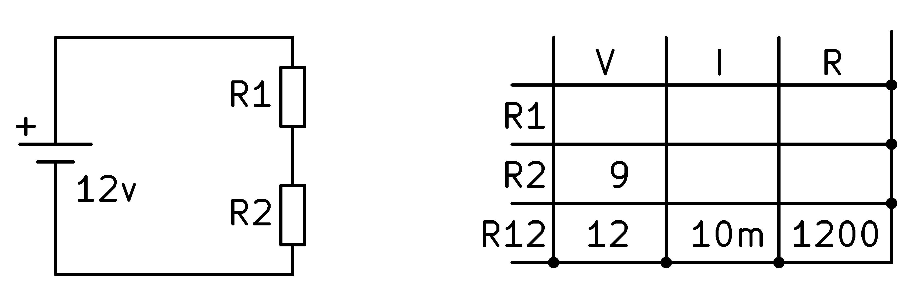{kind=link}
In order to continue, we apply the law of components in series which says that the current through all the elements of the circuit is the same.
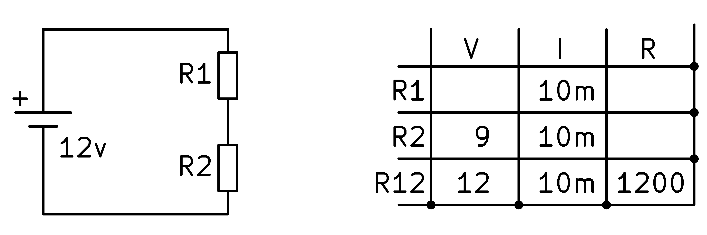{kind=link}
Now we can apply Ohm's law again to the second resistor to find its value.
{kind=link}
At this point we can continue applying the law of series circuits which says that the total voltage of the resistors is equal to the sum of the voltages in each resistor.
That is: V_R1 + V_R2 = 12v -> V_R1 = 12v - 9v = 3v
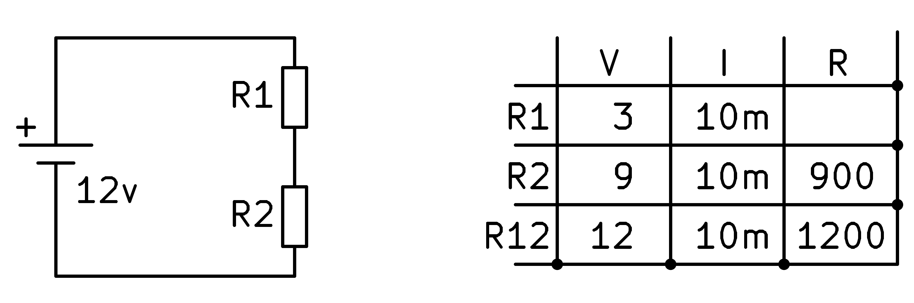{kind=link}
To finish, we apply Ohm's law to the first resistor and find its value.
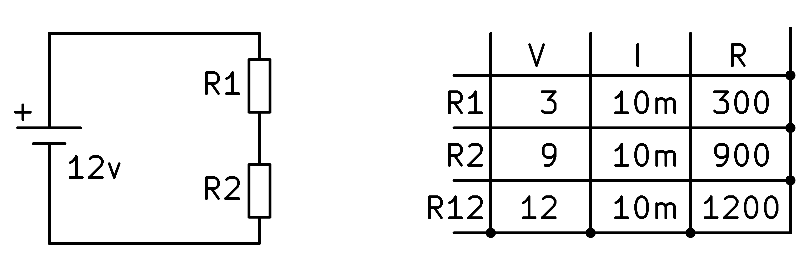{kind=link}
In this last box we could also have applied the formula for the equivalent of resistances in series. Knowing that R1 + R2 = R12, it can be easily calculated that R1 must be worth 300 Ohms.
Mixed series-parallel circuit¶
In this section we are going to solve a mixed circuit, with series and parallel connections, in which we know the value of all the resistances.
We begin by copying into the table the values of resistance and voltage that we already know.
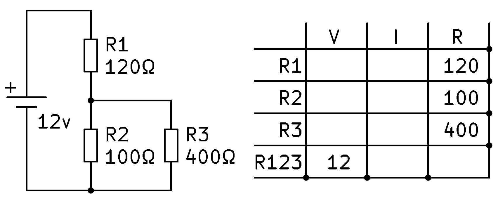{kind=link}
From here we have no data to solve for any of the first three rows. The first task will be to calculate the equivalent resistance of the three resistors in the circuit.
First we find the parallel of 100 Ohms and 400 Ohms that gives us a result of 80 Ohms.
Next we calculate the series equivalent of resistor R1, with 120 Ohms, and from the previous result, 80 Ohms. Adding both gives us a total result of 200 Ohms, which we can write in the hole corresponding to resistor R123.
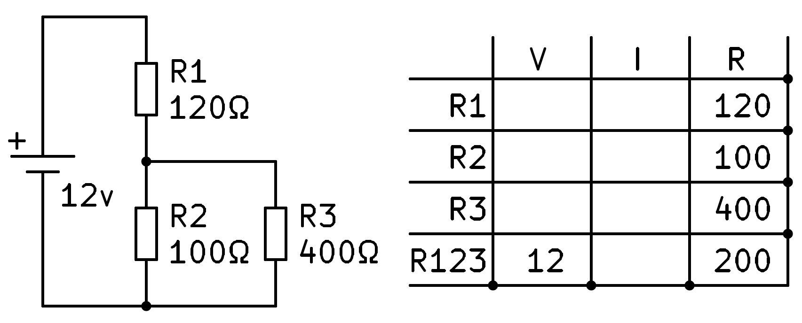{kind=link}
We can now apply Ohm's law to the fourth row to find the total current flowing through the circuit, 60 milliamps.
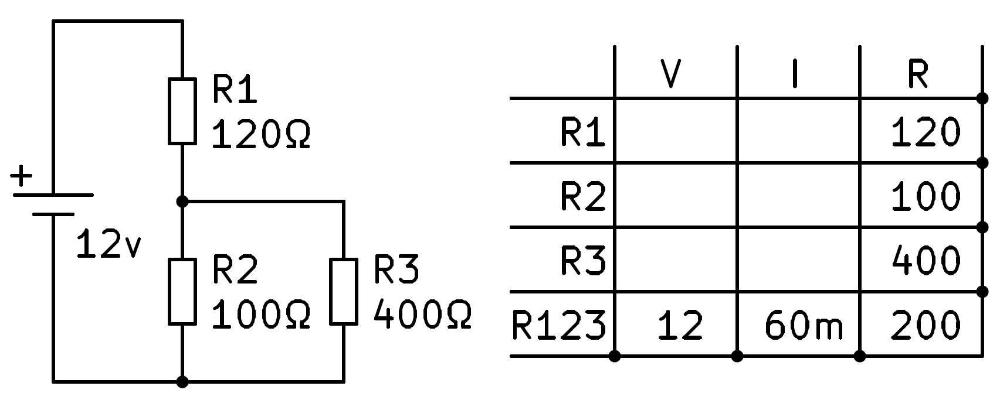{kind=link}
All the current that flows through the circuit will flow through R1 to be in series. With this data we can fill in the current of R1 by copying the total current.
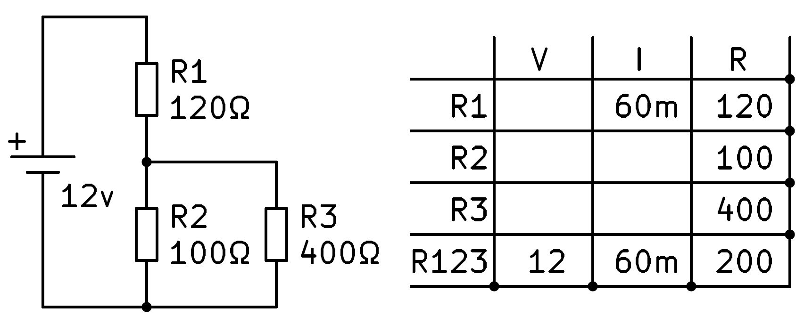{kind=link}
At this point we can apply Ohm's law to the first row to calculate the voltage across resistor R1.

The total voltage of the battery, 12v, will be equal to the sum of the voltages of the two branches in series of the circuit, R1 and R23.
Clearing we have that the voltage in resistors R2 and R3 is 12v - 7.2v = 4.8v, which we can write in the corresponding boxes.
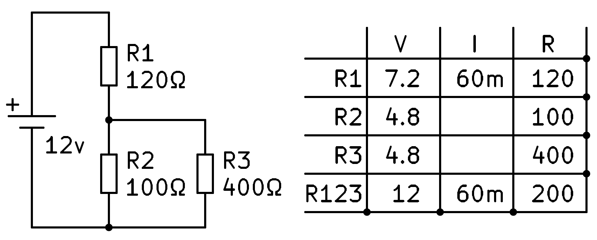{kind=link}
Now we can apply Ohm's law to the second and third rows to finish calculating the intensity values we don't know yet.
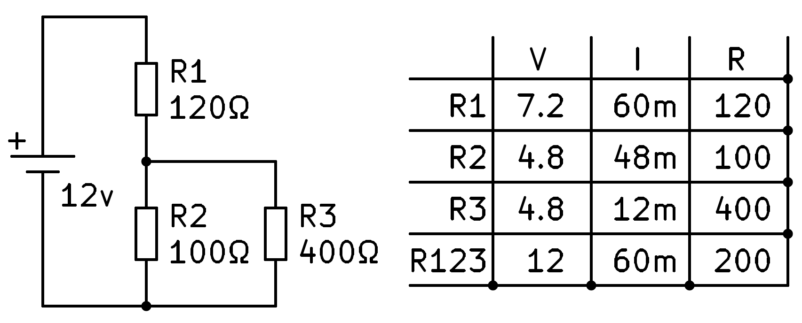{kind=link}
To finish we will verify that the sum of the currents in R2 and in R3 is equal to the total current that circulates through the circuit.
Cuestionarios¶
Questionnaires on circuit resolution.